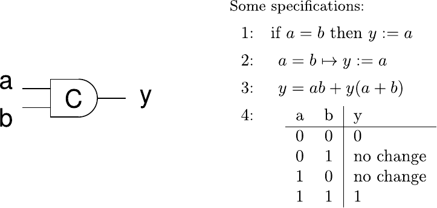
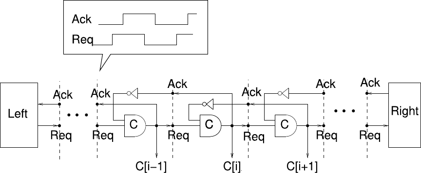

3.2 Basic Asynchronous Circuit Elements#
In Section 3.1, we concerned ourselves with the theoretical protocols that are used to implement handshaking in asynchronous circuits. In this section we will look at fundamental circuit elements that act as the basis of asynchronous circuits.
The handshake protocols discussed so far were all based on mutual agreement (request and acknowledgment) before transferring data between each other. Many asynchronous circuits rely on the so called Muller Pipeline as the fundamental control structure to implement these handshakes. While there are some variations in implementations,
depending on the specific protocol, the concept of the Muller pipeline remains as the backbone of most asynchronous circuits. Having understood the behaviour of the Muller pipeline will be key to understand the behaviour of the specific pipeline architectures introduced in Section 3.3.
This section will first go over the Muller C-element or C-gate, which is a fundamental building block for the Muller pipeline and asynchronous circuits in general. After that we will look at the implementation and behaviour of the Muller pipeline itself. These concepts date back as early as the 1950s and were pioneered by David E. Muller [12, 13].
3.2.1 Muller C-Element#
The Muller C-element or C-Gate is a sequencing element for asynchronous circuits. Its function is quite straightforward: the output is 1, when all inputs are 1 and 0, when all inputs are 0. For all other input combinations, the C-gate holds its current state.
{kind=link}

Figure 3.3: Specification of the Muller C-element [11]
Figure 3.3 shows the symbol and four possible formal specifications of the Muller C element. The element exhibits the behaviour that it only changes its state, when all inputs agree. Additionally, a state change at the output clearly indicates the states of the inputs: When the element changes its output from 0 to 1, we know that both inputs have to be 1. The same goes for the output changing from 1 to 0, indicating that both inputs are now 0.
When dealing with protocols, where both sides have to agree via req and ack singals, that cyclically transition between 0 and 1, the Muller C element is useful in capturing those events.
3.2.2 The Muller Pipeline#
Figure 3.4 depicts the general structure of the Muller pipeline2. It consists of a series of interconnected C-gates C[i], where each gate receives its inputs from the output of its predecessor C[i-1] and the inverted output of its successor C[i+1].
{kind=link}

Figure 3.4: The Muller Pipeline [11]
Initially, all C-gates C[i] store the value 0. An input value 1 from predecessor C[i-1] is propagated, when the successor C[i+1] outputs a 0. Similarly a 0 from C[i-1] will only propagate, if C[i+1] holds a 1. Generally one can form the following simple state rule [14]:
“IF predecessor and successor differ in state |
The pipeline basically works as a FIFO for the transitions on the request signals. When
the left side issues a request, it travels through all the stages until it arrives at the
right-hand side. If never acknowledged by the right-hand side, the pipeline will slowly
fill with every transition made on the request signal. Once filled, the C-gates will store
alternating 0 and 1 values and the pipeline will stop handshaking with the left-hand side
and block new requests from entering. For a more intuitive of the Pipeline understanding you can use the PipSim simulation tool below: